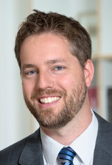

Welcome to ANDREAS-50
About the Workshop
The 50th international 50th international workshop on ANalysis, Debugging, Reverse Engineering, And Security (ANDREAS-50) brings together scientists across the globe to exchange their experience in these fields and to talk about the past and future of ANDREAS topics.
The workshop features a full-day scientific program with high-profile invited speakers. The format of the workshop will be talks and discussions, with a special focus on retrospection (What happened?), introspection (What came out of it?), projection (What may come out of it?), and absurd philosophy (Why do we do this anyway?).
Confirmed Speakers
|  | Eric Bodden, University of Paderborn, Germany |
| Lionel Briand, University of Luxembourg, Luxembourg | |
| Valentin Dallmeier, Testfabrik AG, Germany | |
| Gordon Fraser, University of Sheffield, United Kingdom | |
| Alessandra Gorla, IMDEA, Spain | |
| Harald Gall, University of Zurich | |
| Nachiappan Nagappan, Microsoft Research | |
| Gregor Snelting, Karlsruhe University | |
| Walter F. Tichy, Karlsruhe University |
Program Details
The workshop primarily targets scientists who have cooperated with Andreas Zeller's chair in the past, but is welcome to anyone who would be interested. Details about the program will be posted soon.
Learn more about the venue, the organization, and registration.